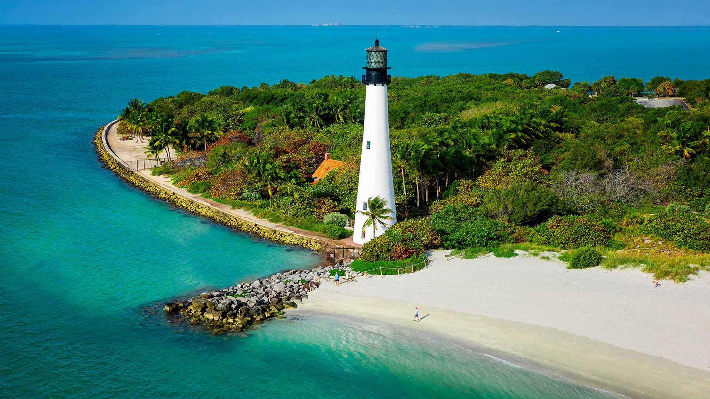

Geographic location has been the key factor in Florida’s long and colourful development, and it helps explain the striking contemporary character of the state. The
greater part of Florida lies on a peninsula that protrudes southeastward from the North American continent, separating the waters of the Atlantic Ocean from those of the Gulf of
Mexico and pointing toward Cuba and the Caribbean Sea beyond. Florida shares a land border with only two other states, both along its northern boundary: Georgia (east) and Alabama
(west). The nearest foreign territory is the island of Bimini in the Bahamas, some 50 miles (80 km) to the east of the state’s southern tip. Florida is the southernmost of the 48
conterminous United States, its northernmost point lying about 100 miles (160 km) farther south than California’s southern border. The Florida Keys, a crescent of islands that forms
the state’s southernmost portion, extend to within about 75 miles (120 km) of the Tropic of Cancer. Florida’s marine shoreline totals more than 8,400 miles (13,500 km), including
some 5,100 miles (8,200 km) along the gulf; among U.S. states, only Alaska has a longer coastline.
| Elected Officials | Tourist Spots |
|
|
Reference:
www.britannica.com/place/Florida
Go back to Map Page